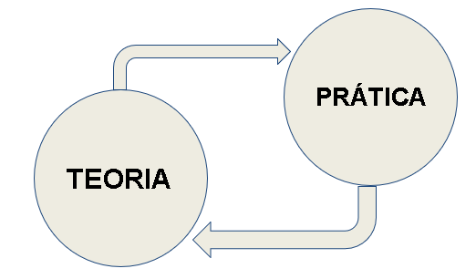

Bem vindo disciplina de Disruptive Architectures: IA e IoT¶
Olá pessoal, bem vindos!! Nesta página você irá encontrar os conteúdos ministrados em sala de aula assim como dicas,atividades, laborórios e muito mais.
- Curso: Tecnologia de Desenvolvimento de Sistemas
- Disciplina: Disruptive Architectures: IA e IoT
- Turmas 2025: 2TDSA, 2TDSB
- Repositório com todos os arquivos está disponivel em: https://github.com/arnaldojr/DisruptiveArchitectures/
Prof. Arnaldo Viana
Objetivos¶
Nosso curso está dividido em IA e IoT, ao final da disciplina o estudante será capaz de:
- Compreender os conceitos de Análise de dados, Machine Learning (ML) e Deep Learning (DL)
- Aplicar conceitos e técnicas de DL
- Desenvolver pequenos projetos envolvendo IA.
- Compreender o conceitos de sistemas baseados em IoT (Internet das Coisas)
- Conhecer as principais tecnologias habilitadoras da IoT
- Programar e desenvolver pequenos projetos de IoT
O que preciso ter/saber para acompanhar esse curso?¶
- Lógica de programação
- Python básico
- Algebra linear
- Dedicação
Dinâmica das aulas:¶
O curso é baseadas em desafios (exercicios, atividades, pesquisa e etc.) que abordam teoria e prática.
Por essa razão as aulas estão divididas em pequenos laboratórios, cada laboratório possui os seus objetivos especificos.

Quais software preciso instalar para acompanhar esse curso?¶
Basicamente, vamos trabalhar com scripts em python e algumas bibliotecas que podem ser executados localmente ou em nuvem.
Como sugestão de instalação local:
Em nuvem:
Idéias de projetos¶
As aplicações são vastas e diversas... Para ajudar a despertar a curiosidade, pense de que forma podemos utilizar ML para resolver um problema do nosso dia a dia.
Bibliografia¶
- Stewart Russel e Peter Norvig . Inteligência artificial. 3ª. Ed., Rio de Janeiro: Campus, 2012.
- George F. Luger . Inteligência Artificial, 6ª ed. São Paulo: Pearson Education do Brasil, 2013 (biblioteca virtual)
- Aurélien Geron. 2019. Hands-On Machine Learning with Scikit-Learn, Keras, and Tensorflow: Concepts, Tools, and Techniques to Build Intelligent Systems